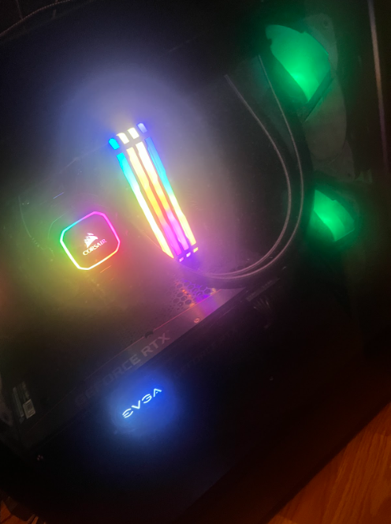

About Me
Hello! I'm Angel Ibanez from Providence, Rhode Island. I am currently a sophomore at the University of Rhode Island, majoring in Computer Science. I am passionate about coding and excited about building software that solves real-world problems.
What is a Software Developer and why I want to be one?
A Software Developer is a person that creates, tests, and maintains software, programs, systems, and etc.
all software developers use different kind of programs such as Python,javascript, C++ and a lot more. these programs
specialize for tons of different type of applications and problems a software developer.
My reasoning for wanting to be a software developer is because ever since I was a kid, I loved technology and especially computers.
Another reason is because my 2 brother work in the field of software developering and they are really big inspirations for me.

How I Plan to Achieve My Goal
My journey to becoming a software developer involves actively working on projects and mastering key computer science concepts.
- Solo Projects: I focus on creating real-world projects to develop practical skills and problem-solving abilities.
- Group Projects: Collaborating with others allows me to gain experience in teamwork and understand the challenges of coding as a group.
- Data Structures: A deep understanding of data structures is crucial for writing efficient and optimized code, and it is a major area of my focus.